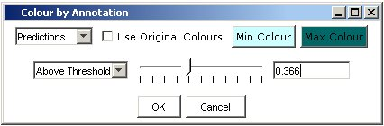
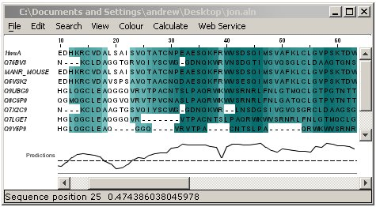

Annotation Colouring
Jalview 2.08 allows an alignment to be coloured on a per-column basis based
on any numerical annotation added to that alignment.
Select "Colour" → "..
by Annotation" to bring up the Colour by Annotation settings window.

- Select which annotation to base the colouring scheme on using the top left
selection box.
- If the "Use Original Colours" box is selected, the colouring
scheme will use the colouring scheme present on the alignment before the Annotation
Colour Settings window was displayed.
- The colour scheme can display a colour gradient from a colour representing
the minimum value in the selected annotation to a colour representing the
maximum value in the selected annotation. Use the "Min Colour" and
"Max Colour" to set the colour gradient range.
- Select whether to colour the alignment above or below an adjustable threshold
with the selection box center left of the window.
- Change the threshold value with the slider, or enter the exact value in
the text box.
